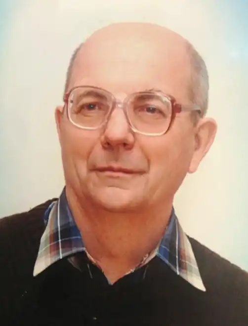

Марко Східняк (псевдо для власних творів), Віктор Часник (псевдо для перекладів). Згідно паспорту – Чесноков Віктор Леонтійович. Перекладач, автор оповідань у дусі альтернативної історії та українських "попаданців".
Народився 29 липня 1949 року на Херсонщині, у сім'ї селян-колгоспників, водія та доярки. По закінченню університету працював викладачем у ряді університетів України. Кандидат наук, доцент. Автор низки підручників за фахом. У другому десятилітті ХХІ століття зайнявся перекладом. Найкращими переспівами цього періоду можна вважати: А. С. Грін "Золотий ланцюг". – К: Компас,2013; Ж. Верн "Плавучий острів" – (Електронну книжку видав Укрліб ) та ін.
По закінченню викладацької роботи, у 68 років повністю перейшов до літературної діяльності. Першим твором цього періоду є переклад оповідання Фрица Лейбера "Порядна дівчина і її п'ять чоловіків". Найкращими: збірка оповідань Габріеля Гарсіа Маркес "Похорони Великої мами"; п'єса Жана Жироду "Троянської війни не буде"; може — продовження перекладів повістей Жуль Верна. Останнім часом доводить до достатньої якості та публікує власні оповідання.